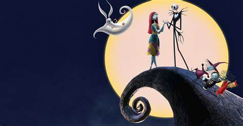
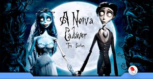
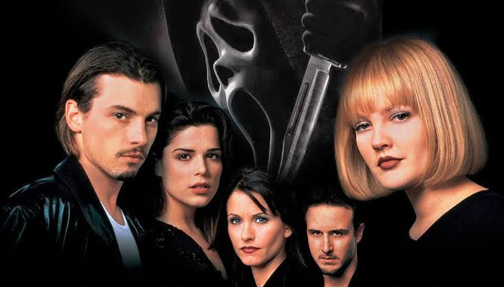

O estranho mundo de Jack
O Estranho Mundo de Jack é um filme de stop motion de norte-americano de 1993, do gênero fantasia musical, dirigido por Henry Selick, produzido e coescrito por Tim Burton. Conta a história de Jack Skellington da "Cidade do Halloween" que abre um portal para a "Cidade do Natal"

A Noiva Cadáver
A Noiva Cadáver é um é um filme de stop motion de norte-americano de 20058, do gênero fantasia musical, produzido e coescrito por Tim Burton. Conta a história de Victor, que uma noite antes de seu casamento vai para uma florestar praticar seus votos e acaba se casando com Emily, uma noiva Cadáver.
Abracadabra
Após se mudar para Salem, Max Dennison decide explorar a casa mal assombrada das três bruxas más que morreram a seculos. Juntamente com sua irmã Dani e sua Amiga Allison, eles acabam libertando as bruxas de sua morte e correm contra o tempo para salvar a cidade de sua maldade. O Filme é do ano de 1993 e pode ser encontrado no Disney+
Pânico
Um grupo de jovens enfrenta um assassino mascarado que testa seus conhecimentos sobre filmes de terror. Tendo seu alvo principal Sidney. Filme de 1996 do genêro Slasher e escrito por Kevin Williamson. Pode ser encontrado na Paramount, Amazon Prime ou Google Play+
